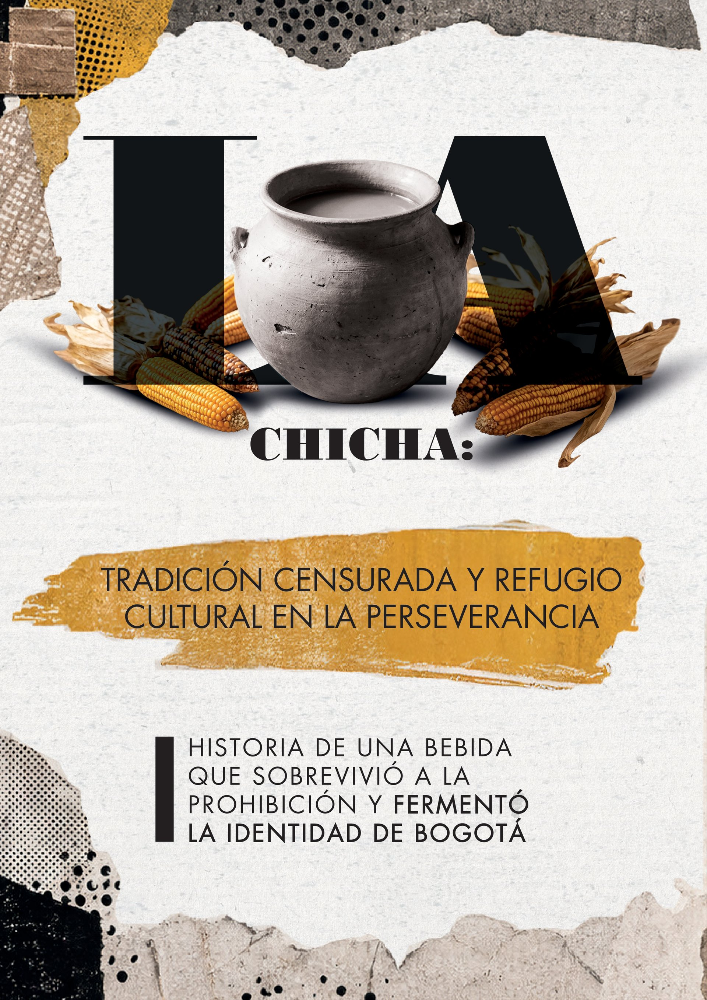
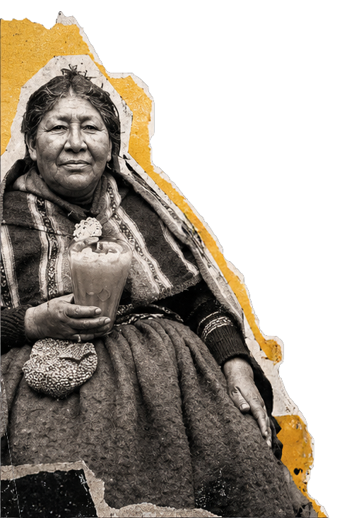
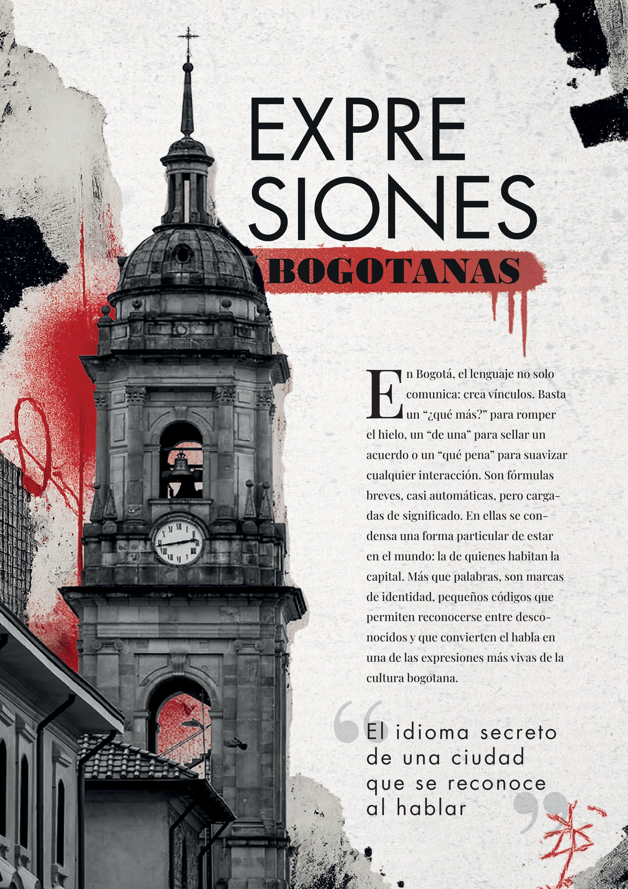
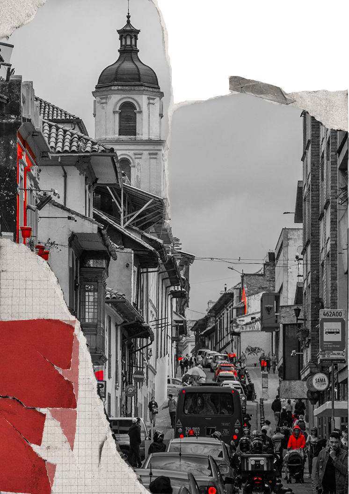
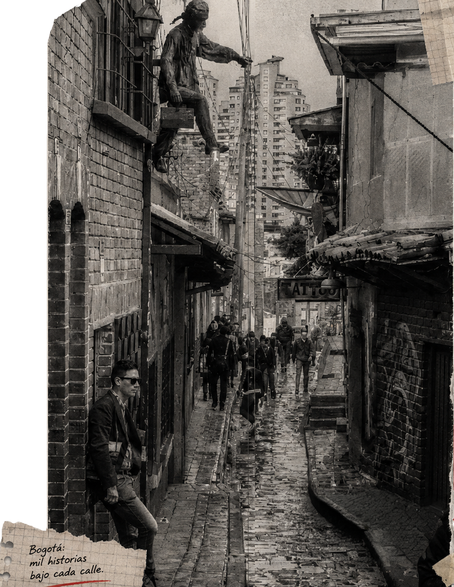
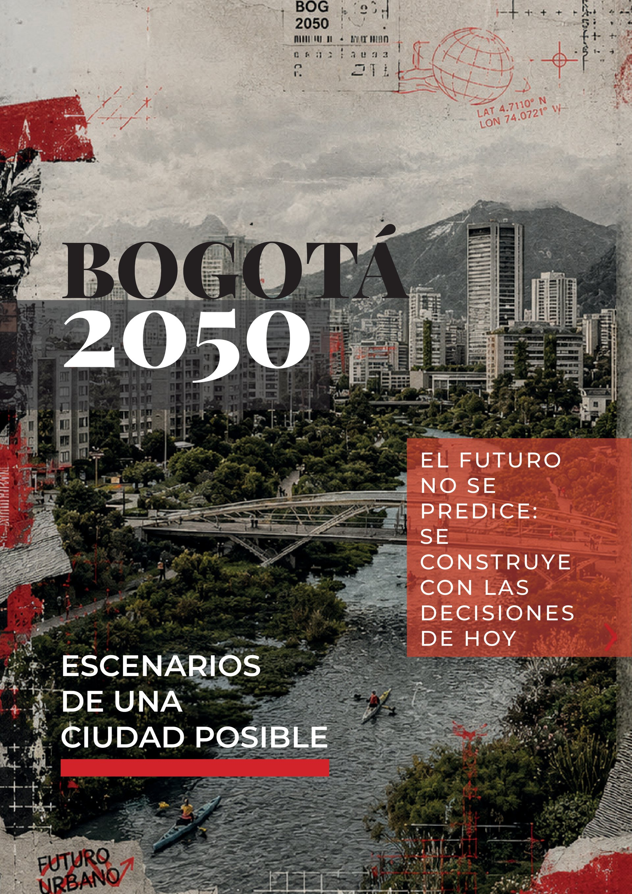
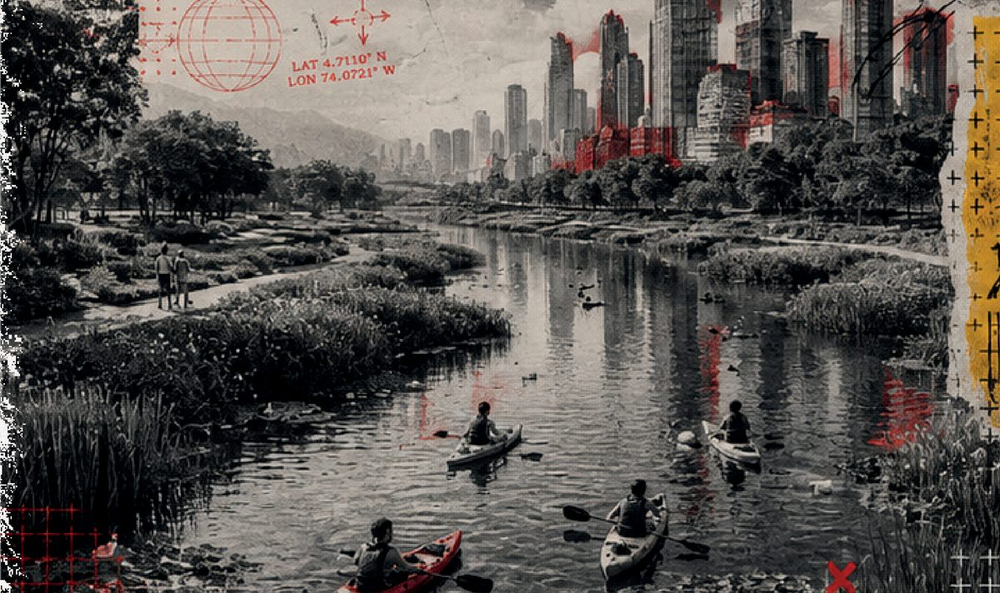
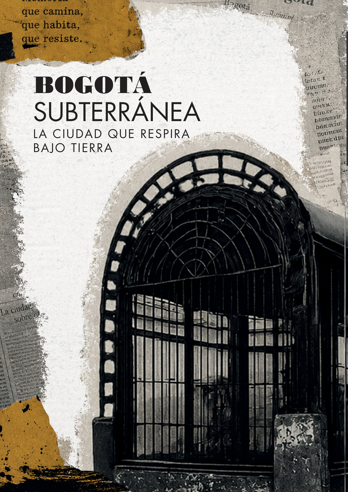
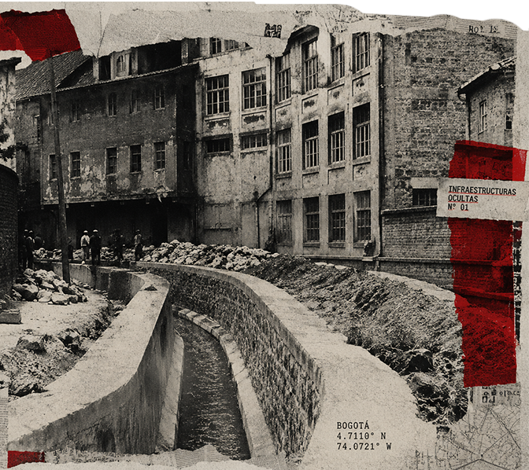

Hay ciudades que se recorren.
Otras, que se habitan.
Bogotá exige algo distinto: ser leída.

Historia de una bebida que sobrevivió a la prohibición y fermentó la identidad de Bogotá.

Historia de la Chicha
En Bogotá hay sabores que no solo se prueban: se recuerdan. Entre ellos, la chicha ocupa un lugar especial. Elaborada a base de maíz fermentado, esta bebida ancestral ha sido testigo silencioso de la historia de la ciudad.
Celebrada por comunidades indígenas, perseguida por las élites, prohibida por el Estado y finalmente reconocida como patrimonio cultural. En el barrio La Perseverancia, la chicha encontró refugio y se convirtió en símbolo de memoria, resistencia e identidad.
"La chicha no nació como bebida popular urbana: nació como ritual y símbolo de abundancia para los pueblos muiscas."
Para los muiscas, la chicha era elemento ceremonial, alimenticio y simbólico. Se usaba en rituales religiosos, celebraciones de cosecha y reuniones comunitarias del altiplano cundiboyacense.
La preparación tradicional era un acto colectivo y femenino: las mujeres masticaban el maíz para activar la fermentación enzimática, luego lo cocían en grandes tinajas de barro durante días. El resultado era una bebida levemente alcohólica, nutritiva y de sabor ácido que acompañaba tanto el trabajo cotidiano como los grandes rituales.
Con la llegada de los españoles, la chicha no desapareció: mutó. Se adaptó a los nuevos centros urbanos, a las plazas de mercado, a los barrios obreros. Las chicherías se convirtieron en espacios de sociabilidad popular donde se fraguaban alianzas, se debatía la política y se cantaba la memoria de un pueblo que resistía sin proclamarlo.

Guardiana de la chicha en La Perseverancia · Bogotá
Desde el ritual muisca hasta el patrimonio cultural — haz clic en cada momento para ver imagen
Elemento ceremonial y símbolo de abundancia. El maíz conectaba a los muiscas con la tierra y sus ciclos naturales en el altiplano.
Puntos de encuentro para artesanos y trabajadores. Las autoridades ven en ellas focos de "mezcla social" y pérdida de control sobre la población.
Tras muertes por chicha envenenada en Sogamoso, Simón Bolívar ordena su prohibición regional. Comienza la persecución institucional sistemática.
Leo Kopp funda Bavaria S.A. La cerveza industrial se promueve como símbolo de modernidad e higiene. Campañas estigmatizan la chicha como insalubre y peligrosa.
El asesinato de Gaitán desata el caos. La chicha es señalada como cómplice de los disturbios. Su producción pasa a la clandestinidad total en toda la ciudad.
Mientras el Estado perseguía la chicha en toda la ciudad, el barrio obrero La Perseverancia la mantuvo viva en patios y hogares. La memoria colectiva fue más fuerte que la prohibición.
La nueva Constitución reconoce la chicha. Nace el Festival de la Chicha, el Maíz, la Vida y la Dicha en La Perseverancia, que se celebra hasta hoy.
Cada tinaja conserva +500 años de historia. Más que una bebida: memoria, territorio y resistencia cultural en el corazón de Bogotá.

Las palabras que nos delatan. El lenguaje como mapa de identidad urbana bogotana.

El habla bogotana
Haz clic en cada expresión para descubrir su significado
Saludo universal. Equivale a "¿cómo estás?". Se usa como bienvenida sin esperar respuesta larga. El bogotano lo dice tres veces seguidas.
De acuerdo, sin dudar. "¿Vamos al cine?" — "¡De una!" Viene de "de una vez". Máxima afirmación bogotana.
Amigo, compañero. Del término "parcero". Se usa con conocidos y desconocidos por igual. Define confianza inmediata.
Persona de clase alta. Con connotación de afectación. Referido a zonas norte de Bogotá. Hoy usado con humor afectuoso.
Genial, agradable. Término positivo por excelencia del español colombiano. "¡Qué chévere!" es aprobación total.
Fiesta, evento nocturno. "Vamos de rumba" = salir a celebrar. La rumba bogotana tiene su geografía propia: Zona Rosa, Chapinero, La Macarena.
Bromear, tomar el pelo. "¿Estás mamando gallo?" = ¿Me estás tomando el pelo? Costumbre social bogotana muy arraigada.
Excelente, muy bueno. "¡Ese man es bacano!" — alta aprobación social. Más enfático que chévere. Muy bogotano.
Trabajar duro. "Me toca camellar" = tengo que trabajar. Del camello, animal de carga. Expresa esfuerzo sin queja.
Tipo / mujer. Términos neutros para referirse a cualquier persona. "Ese man" o "esa vieja" no tiene connotación negativa.
Relajado, pasando el rato. "Estoy parchado en la casa" = estoy tranquilo en casa. El "parche" es el grupo de amigos.
Persona de barrio popular. Puede ser despectivo o afectuoso según el contexto. Viene de "compañero". Identidad urbana reclamada.
Flauta traversa muisca · pág. 12
El sonido de la flauta muisca acompaña el ritual de la chicha, desde el altiplano cundiboyacense hasta los barrios de Bogotá.

Lenguaje, historia y pertenencia en la identidad bogotana.

¿Qué significa ser rolo?
Bogotá es una de las ciudades de mayor migración interna en Colombia. Más del 40% de sus habitantes nacieron en otras regiones. Esto genera una pregunta constante: ¿qué hace a alguien rolo?
La respuesta no está en el acta de nacimiento sino en la adopción de una forma de ver el mundo: el humor ácido, la puntualidad relativa, la pasión por el café, el respeto por el turno en la fila y la queja perpetua por el tráfico.
"Ser rolo no es nacer en Bogotá. Es aprender a quejarse del frío mientras la extrañas cuando no está."
El cachaquerismo, el serranismo, el costañerismo — todos llegan a Bogotá y eventualmente se convierten en algo distinto: bogotanos.
El rolo auténtico tiene sus propias liturgias: el tinto a toda hora, el aguacero a las tres de la tarde, el trancón insalvable de la Séptima, la nostalgia por el tranvía aunque nunca lo haya conocido. Hay un orgullo discreto en el lenguaje, en el usted de respeto que se mantiene incluso entre amigos íntimos, en la precisión con que se nombra cada localidad como si fuera un mundo aparte.
Ser rolo tampoco es estático. La Bogotá de hoy es mestiza de acepciones: el paisa que lleva veinte años en Chapinero y ya dice "de una" sin pensarlo; la costeña de Kennedy que combina el vallenato con el rap del sur; el extranjero que aprendió a cruzar Transmilenio con cancha. Todos, eventualmente, se vuelven un poco rolos.


Escenarios de una ciudad posible. ¿Qué Bogotá queremos construir?
Proyectos, debates y sueños para la Bogotá del futuro
En 2050 Bogotá tendrá entre 12 y 14 millones de habitantes. Las decisiones que se toman hoy —sobre movilidad, espacio público, agua, vivienda y medioambiente— definirán qué tipo de ciudad será esa.
El metro, las ciclovías, el Parque Entrenubes, la recuperación del río Bogotá: cada proyecto es una apuesta sobre el futuro. Pero el urbanismo no es solo infraestructura — es también cultura, identidad y decisión colectiva.
"La ciudad del futuro no se planea sola. Se construye con quienes la habitan hoy."


Túneles, acueductos, historia y leyendas bajo el asfalto de la capital.

Túneles subterráneos de Bogotá
Bajo el asfalto de Bogotá existe otra ciudad. Una red de túneles, canales, acueductos y construcciones coloniales que se extiende a lo largo y ancho del subsuelo capitalino.
La Avenida Jiménez, antiguamente el río San Francisco, corre hoy soterrada bajo el concreto. El río Arzobispo, el San Agustín, el Fucha — todos fueron cubiertos en el proceso de modernización. La ciudad construyó encima de su propia historia.
"Bogotá enterró sus ríos para construir avenidas. Ahora los busca para recordar lo que fue."
Los túneles coloniales del centro histórico, algunos de más de 400 años, conectaban iglesias, conventos y el palacio de gobierno. Hoy permanecen sellados, aunque algunos siguen siendo explorados por investigadores e historiadores urbanos.

Habitante de Cedritos · Bogotá
Hay algo profundamente poético en la forma en que Bogotá nombra sus barrios: con árboles. Cedritos habla del cedro que cubría las laderas orientales. El Nogal evoca los nogales que acompañaron a los primeros colonizadores. Los Pinos, Álamos, Los Sauces — cada nombre es una fotografía del paisaje que fue.
Con la urbanización, la mayoría de esos árboles desaparecieron. Quedaron los nombres como epitafios verdes en el mapa de la ciudad. Algunos barrios han emprendido procesos de recuperación: siembran nuevamente los árboles que les dieron identidad.
"Los barrios recuerdan con su nombre lo que la urbanización les quitó. Son epitafios verdes en el mapa de la ciudad."


Populus alba
Engativá. Los álamos blancos cruzaron el Atlántico desde Europa y se plantaron masivamente en las llanuras occidentales de Bogotá. Un árbol foráneo que se convirtió en símbolo propio del barrio.
Árbol europeo